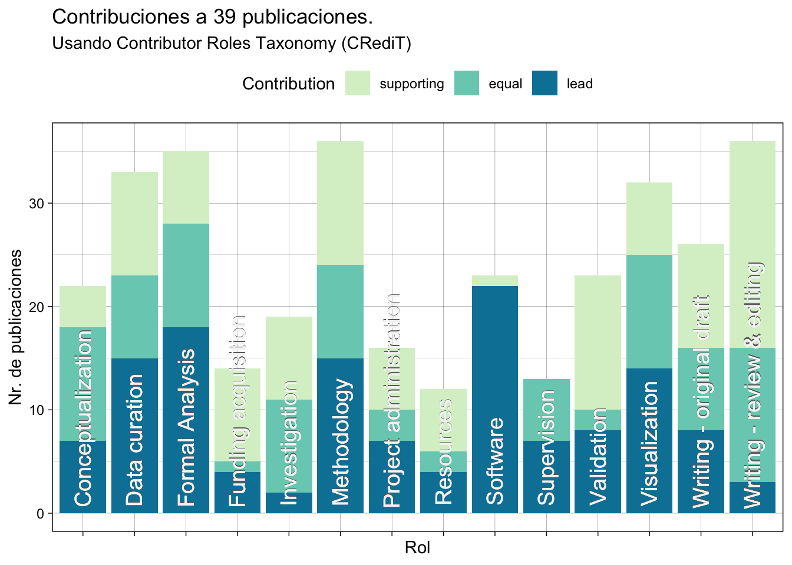

Mis contribuciones académicas
Hasta la fecha tengo un total de 42 publicaciones tradicionales revisadas por pares, incluyendo 39 artículos en revistas científicas, 1 capítulos de libros y 1 libros. Mi producción en este indicador se ha duplicado desde mi llegada a la Universidad de New South Wales: tuve 20 publicaciones entre 2003 y 2018, y llevo 22 desde 2019.
Mis publicaciones son producto de colaboraciones con colegas y estudiantes. Para medir mis contribuciones personales en los trabajos que publico uso el sistema propuesto por Contributor Role Taxonomy (CRediT https://credit.niso.org). Para ello he anotado mi contribución a catorce roles posibles, desde la conceptualización a la redacción del manuscrito. Las contribuciones pueden ser lead (el contribuyente principal en un rol), equal (cuando varios coautores contribuyen en igual medida) o supporting (contribuciones de menor magnitud).
De un total de 39 publicaciones con información sobre CRediT1 mis contribuciones más importantes (como lead or equal) han sido en los siguientes roles (número de publicaciones en paréntesis): Conceptualization (18), Data curation (23), Formal Analysis (28), Methodology (24), Software (22), Visualization (25), Writing - original draft (16) and Writing - review & editing (16).
Notas
Excluyo las publicaciones que me incluyen como parte de un consorcio y en las cuales mi contribución es indirecta.↩︎